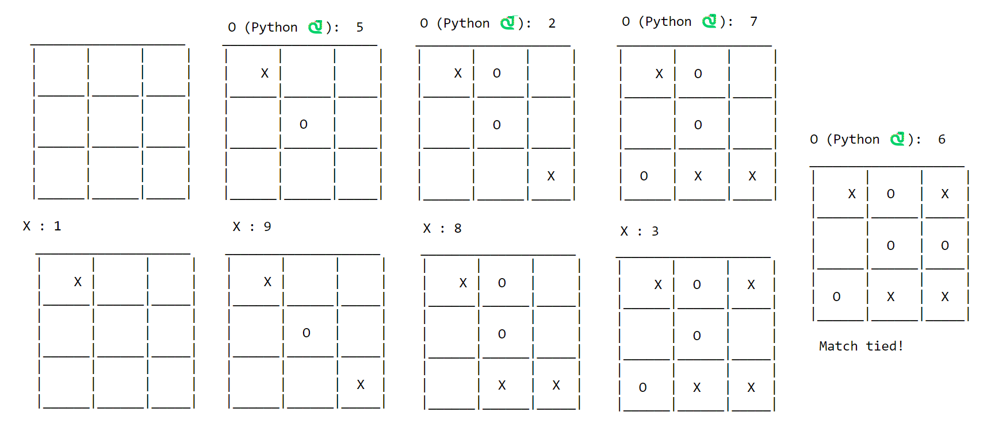

Ultimate challenge of human intelligence against artificial intelligence!
Today, we will witness a battle of wits between a human and an AI opponent in one of the simplest yet most beloved games of all time: Tic-Tac-Toe.

Tic-tac-toe and AI
Tic-Tac-Toe is a classic game that has been played by generations of children and adults alike. It’s a game that is easy to learn, but difficult to master.
However, with the advent of AI (Artificial Intelligence), even the most skilled human players may find themselves struggling to keep up with their electronic counterparts.
It’s important to first gain experience by coding the game to play against a human opponent.
Related Article: Tic-tac-toe, Human vs Human.
Keep calm coding begins….
Tic-tac-toe in Python
Grid box pattern
The game_grid(value) function takes a list value containing the current state of the Tic-Tac-Toe game board as input.
def game_grid(value):
print("\n")
print("\t____________________")
print("\t| | | |")
print("\t| {} | {} | {} |".format(value[0], value[1], value[2]))
print('\t|______|______|_____|')
print("\t| | | |")
print("\t| {} | {} | {} |".format(value[3], value[4], value[5]))
print('\t|______|______|_____|')
print("\t| | | |")
print("\t| {} | {} | {} |".format(value[6], value[7], value[8]))
print('\t|______|______|_____|')
print("\n")
-
The function prints the Tic-Tac-Toe game board using ASCII art to display the current state of the game.
-
The function prints a 3x3 grid with lines and pipes using the values in the value list to represent the Xs and Os on the board.
-
The value list contains 9 elements representing the 9 positions on the Tic-Tac-Toe board.
Possible winning patterns
The code defines a list called winning_pattern which contains sub-lists of all the possible winning combinations in a Tic-Tac-Toe game.
winning_pattern = [
[1,2,3],
[4,5,6],
[7,8,9],
[1,4,7],
[2,5,8],
[3,6,9],
[1,5,9],
[3,5,7]
]
Variables initialisation
These variables are used to keep track of the state of the game, including which positions on the board have been taken and by whom.
taken_moves = []
default_values = [' ' for i in range(9)]
players_moves = {
'X_moves': [],
'O_moves': []
}
players = ['X', 'O']
notes to the code….
-
taken_moves = [], creates an empty list to keep track of the positions on the board that have already been taken by the players. -
The second line,
default_values, creates a list with 9 elements, each element initialized to a blank space character (‘ ‘). This represents the initial state of the game board. -
players_movesis a dictionary that keeps track of the moves made by each player.
Update Game state
The update_game function updates the game state based on the player’s move and returns a visual representation of the updated game board.
def update_game(move, player):
taken_moves.append(move)
players_moves[player + '_moves'].append(move)
default_values[move - 1] = player
return game_grid(default_values)
-
The
update_game()takes two arguments:move, which is the position on the board where the player has made their move, and player, which is eitherXorO, indicating which player made the move. -
It first adds the move to the
taken_moveslist, which keeps track of all positions on the board that have been taken. -
Next, the function appends the
moveto the list associated with the appropriate player in theplayers_movesdictionary. -
Also, updates the
default_valueslist to reflect the new move made by the player, replacing the blank space at themove - 1index with the player’s symbol (XorO).
Decide winner
On the basis of taken steps, recorded inside players_moves dictionary, check_winning will decide the winner.
def check_winning():
for player in players_moves:
for i in winning_pattern:
if all(j in players_moves[player] for j in i):
return player
return False
- The function checks if any of the sub-lists in
winning_patternis a subset ofplayers_moves_, which means the player has achieved a winning combination. If a _winning combination is found, the function returnsTrue, otherwise it returnsFalse.
How machine will play
AI First move
The initial_move() used to determine the first move made by the machine when playing tic-tac-toe against a human player.
def initial_move():
#Acquire Center
if 5 not in players_moves['X_moves']:
return 5
#Acquire any corner
return random.choice([1,3,7,9])
-
The function first checks if the center position (position 5 on the board) is available. If it is, the function returns 5 as the machine’s first move.
-
If the center position is not available, the function randomly chooses one of the four corner positions (positions 1, 3, 7, or 9).
AI Smart move 🤓
The smart_move() tries to find the best possible move for the player by analyzing the current state of the game and searching for potential winning slots.
def smart_move(mine_move, opp_moves):
next_move = []
for i in winning_pattern:
if not [x for x in mine_move if x in i]:
for j in i:
if j not in opp_moves:
next_move.append(j)
if len(next_move) == 1:
return next_move[0]
next_move = []
return False
-
The function tries to find the next best move for the player by examining a pre-defined winning_pattern and looking for the next empty slot that the player could potentially use to win the game.
-
First, it checks each pattern in the
winning_patternlist to see if the player has any moves in that pattern. -
If not, it then checks each slot in the pattern to see if the opponent has already taken it. If the slot is still empty, the function adds it to the
next_movelist. -
If there is only one possible next move, the function immediately returns that move. Otherwise, it clears the
next_movelist and moves on to the next pattern. -
If no move is found, the function returns
False.
AI Winning move 🏆
The winning_move() checks if there is a possible winning move for the player and returns that move if there is, otherwise returns None.
def winning_move():
moves = smart_move(players_moves['X_moves'], players_moves['O_moves'])
return moves if moves else None
-
It calls the
smart_move()with theX_movesandO_moveslists from theplayers_movesdictionary as arguments. -
If
smart_movereturns a move, meaning there is a possible winning move for the player,winning_movereturns that move. Otherwise, it returnsNone.
AI Random Edge move
The random_edge_move() returns the first available edge slot on the board, starting from the top-left and moving clockwise, if there is one.
def random_edge_move():
for i in [2,4,6,8]:
if i not in taken_moves:
return i
-
It tries to find an empty slot by iterating over the list
[2,4,6,8], which represents the indices of the edge slots on the board. -
If the index is not in the
taken_moveslist, which contains all the moves already made by both players, the function returns that index. -
If there are no available edge slots, the function does not return anything.
Driver Code - AI vs Human
It plays a game between a human player (X) and the computer (O), using a combination of pre-defined strategies and randomness to determine the computer’s moves.
import random
step = 0
game_grid(default_values)
while step < 9 and step >= 0:
if step >= 4:
print('Match tied!')
break
player = "X"
try:
move = int(input(player + " : "))
if move < 10 and move not in taken_moves:
step += 1
update_game(move,player)
winner = check_winning() if step > 1 else None
if winner:
print(winner, 'Won!')
break
elif step == 1:
O_move = initial_move()
else:
O_move = winning_move()
O_move = smart_move(players_moves['O_moves'], players_moves['X_moves']) if not O_move else O_move
O_move = random_edge_move() if not O_move else O_move
print("O (Python 🐍): ",O_move)
player = "O"
update_game(O_move, player)
winner = check_winning() if step > 1 else None
if winner:
print(winner, 'Won!')
break
continue
print("Invalid move! - either your move is too high or already taken.")
except:
print("Invalid move! - wrong input.")
brief explanation….
-
The code initializes the game grid and a counter for the number of steps taken so far (
step). -
It enters a loop that continues until either 9 steps have been taken (i.e. the board is full) or a winner has been determined.
-
If 4 or more steps have been taken and there is no winner, the game is declared a tie.
-
The loop alternates between the human and computer player turns. For the human player, the code prompts the user for their move and updates the game board if the move is valid.
AI strategies
For the computer player, [in sequence]
- Use the
winning_move()to find a potential winning move. - If there is no winning move, use the
smart_move()to find a move that blocks the human player’s potential winning moves. - If there is no winning or blocking move, use the
random_edge_move()to make a random move on an edge slot.
-
If a valid move is found, the computer player updates the game board and prints its move.
-
After each move, the code checks if there is a winner. If there is, the loop is terminated and the winner is printed. Otherwise, the loop continues.
-
If the human player inputs an invalid move, the code prints an error message and continues the loop.
Example testing
- X = Human Player
- O = AI (Computer)

Conclusion
In conclusion, playing tic-tac-toe against an AI opponent can be a fun and challenging experience. By combining pre-defined strategies and randomness, the AI can make smart and unpredictable moves that keep the game interesting.
While it may be difficult to beat the AI, there are still opportunities for human players to outsmart it and win the game.